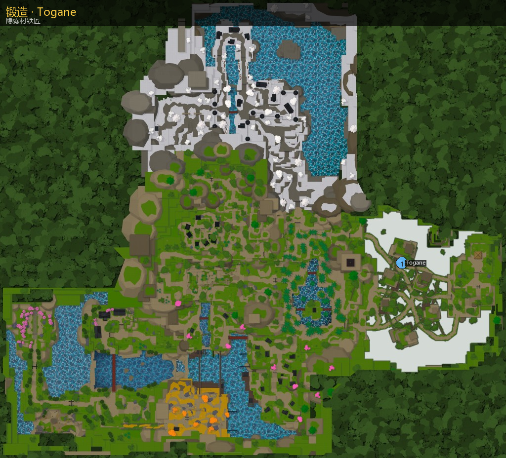

锻造
隐雾村铁匠 Blacksmith Togane 提供锻造台。Lv65 前置任务「寻找另一座锻造台」用于开启奥乌兰侧锻台；日常图纸/武器用材料在此合成。
Blacksmith Togane in Hidden Mist Village. Lv65 quest unlocks the second Ouwland forge.

主页 / 锻造
隐雾村铁匠 Blacksmith Togane 提供锻造台。Lv65 前置任务「寻找另一座锻造台」用于开启奥乌兰侧锻台；日常图纸/武器用材料在此合成。
Blacksmith Togane in Hidden Mist Village. Lv65 quest unlocks the second Ouwland forge.

| 成品 | 英文 | 稀有 | 材料 |
|---|---|---|---|
| 箭矢项链 | Arrow Necklace | R1 | 丝线×2 |
| 绷带面具 | Bandaged Mask | R1 | 丝线×2 |
| 黑色头巾 | Black Bandana | R1 | 丝线×2 |
| 眼罩 | Blindfolds | R1 | 丝线×2 |
| 清风袴 | Clear Wind Hakama | R1 | 丝线×2 |
| 治愈宝石项链 | Healing Gem Necklace | R1 | 丝线×2 |
| 单片眼镜 | Monocle | R1 | 丝线×2 |
| 魔物耳 | Monster Ears | R1 | 丝线×2 |
| 带操项链 | Obi Manipulation Necklace | R1 | 丝线×2 |
| 纸袋 | Paper Bag | R1 | 丝线×2 |
| 收割者项链 | Reaper Necklace | R1 | 丝线×2 |
| 符文眼面具 | Runic Eye Mask | R1 | 丝线×2 |
| 岛纹腰卷 | Shima Koshimaki | R1 | 丝线×2 |
| 星之眼罩 | Star Eye Patch | R1 | 丝线×2 |
| 玉理项链 | Tamari Necklace | R1 | 丝线×2 |
| 破损忍者围巾 | Torned Ninja Scarf | R1 | 丝线×2 |
| 低语之风耳环 | Whispering Winds Earrings | R1 | 丝线×2 |
| 黑色魔物耳 | Black Monster Ears | R2 | 丝线×4 |
| 眼带 | Eye Sash | R2 | 丝线×4 |
| 华美刀 | Fancy Katana | R2 | 金属碎料×6 |
| 拟态项链 | Mimic Necklace | R2 | 丝线×4 |
| 海浪刀 | Ocean Wave Katana | R2 | 金属碎料×6 |
| 普通日轮刀 | Regular Katana | R2 | 金属碎料×6 |
| 水下呼吸药水 | Underwater Breathing Potion | R2 | 鬼角×6 · 600 文 |
| 黑云羽织 | Black Kumo Haori | R3 | 丝线×6 |
| 血操项链 | Blood Manipulation Necklace | R3 | 丝线×6 |
| 锁链眼镜 | Chained Glasses | R3 | 丝线×6 |
| 绯红项链 | Crimson Necklace | R3 | 丝线×6 |
| 绯红缠袴 | Crimson Wrap Hakama | R3 | 丝线×6 |
| 冰操项链 | Cryokinesis Necklace | R3 | 丝线×6 |
| 弯刀 | Cutlass | R3 | 金属碎料×10 |
| 织锦片あき | Damask Kata-Aki | R3 | 丝线×6 |
| 木灵羽织 | Deku Haori | R3 | 丝线×6 |
| 炎之项链 | Flame Necklace | R3 | 丝线×6 |
| 花卉守护面具 | Floral Warding Mask | R3 | 丝线×6 |
| 霜牙狐面具 | Frostfang Kitsune Mask | R3 | 丝线×6 |
| 欢愉混沌墨镜 | Happy Chaos Shades | R3 | 丝线×6 |
| 褶纹片あき | Hem stripe Kata-Aki | R3 | 丝线×6 |
| 向日葵袈裟 | Himawari Kesa | R3 | 丝线×6 |
| 星子袈裟 | Hoshiko Kesa | R3 | 丝线×6 |
| 霞浴衣 | Kasumi Yukata | R3 | 丝线×6 |
| 绝望灯笼 | Lantern of Despair | R3 | 丝线×6 |
| 回忆面具 | Mask of Memories | R3 | 丝线×6 |
| 假面舞会面具 | Masquerade Mask | R3 | 丝线×6 |
| 雾云袖無し | Mist Kumo Sodenashi | R3 | 丝线×6 |
| 嘲讽面具 | Mocking Mask | R3 | 丝线×6 |
| 魔物纸袋 | Monster Paper Bag | R3 | 丝线×6 |
| 月纱狐面具 | Moonveil Fox Mask | R3 | 丝线×6 |
| 口中短匕 | Mouth Dagger | R3 | 丝线×6 |
| 忍牙围巾 | Ninja Fang Scarf | R3 | 丝线×6 |
| 独角小鬼面具 | One-Horned Imp Mask | R3 | 丝线×6 |
| 风祈项链 | Prayer of wind Necklace | R3 | 丝线×6 |
| 稀有钓竿 | Rare Fishing Rod | R3 | 10000 文 · 金鱼×5 |
| 青云袈裟 | Seiun Kesa | R3 | 丝线×6 |
| 音之项链 | Sound Necklace | R3 | 丝线×6 |
| 鱿鱼毛线帽 | Squid Beanie | R3 | 丝线×6 |
| 时尚面具 | Stylish Mask | R3 | 丝线×6 |
| 夏夜面具 | Summer Night Mask | R3 | 丝线×6 |
| 美梦眼罩 | Sweet Dreams Eye Mask | R3 | 丝线×6 |
| 雷之项链 | Thunder Necklace | R3 | 丝线×6 |
| 漩涡浴衣 | Uzumaki Yukata | R3 | 丝线×6 |
| 守望者眼罩 | Watcher's Patch | R3 | 丝线×6 |
| 水之项链 | Water Necklace | R3 | 丝线×6 |
| 风之项链 | Wind Necklace | R3 | 丝线×6 |
| 深渊灯笼 | Abyssal Lantern | R4 | 丝线×6 · 精炼矿×2 |
| 苍蓝项链 | Azure Necklace | R4 | 丝线×6 · 精炼矿×2 |
| 黑鹫帽 | Black Vulture Hat | R4 | 丝线×6 · 精炼矿×2 |
| 花灵面具 | Blossom Spirit Mask | R4 | 丝线×6 · 精炼矿×2 |
| 利爪 | Claws | R4 | 金属碎料×10 · 精炼矿×2 |
| 新月纹面纱 | Crescent Marked Veil | R4 | 丝线×6 · 精炼矿×2 |
| 恶魔之角 | Demonic Horns | R4 | 丝线×6 · 精炼矿×2 |
| 炎龙刀 | Enryu Katana | R4 | 金属碎料×10 · 精炼矿×2 |
| 炎之面纱 | Flame Veil | R4 | 丝线×6 · 精炼矿×2 |
| 微光头带 | Gleam Headband | R4 | 丝线×6 · 精炼矿×2 |
| 霸气羽织 | Haki Haori | R4 | 丝线×6 · 精炼矿×2 |
| 菱形袖無し | Hishigata Sodenashi | R4 | 丝线×6 · 精炼矿×2 |
| 冰之项链 | Ice Necklace | R4 | 丝线×6 · 精炼矿×2 |
| 虫之项链 | Insect Necklace | R4 | 丝线×6 · 精炼矿×2 |
| 凯登·下装 | Kaiden's Bottom | R4 | 丝线×6 · 精炼矿×2 |
| 凯登·上衣 | Kaiden's Top | R4 | 丝线×6 · 精炼矿×2 |
| 龟甲袖無し | Kikkō Sodenashi | R4 | 丝线×6 · 精炼矿×2 |
| 崩字片あき | Kuzushiji Kata-Aki | R4 | 丝线×6 · 精炼矿×2 |
| 曼陀罗片あき | Mandala Kata-Aki | R4 | 丝线×6 · 精炼矿×2 |
| 午夜花披风 | Midnight Blossom Cloak | R4 | 丝线×6 · 精炼矿×2 |
| 魔物兜帽 | Monster Hood | R4 | 丝线×6 · 精炼矿×2 |
| 月名片あき | Moonlit Kata-Aki | R4 | 丝线×6 · 精炼矿×2 |
| 羽饰羽织 | Plume Haori | R4 | 丝线×6 · 精炼矿×2 |
| 隐息面具 | Presence Hider Mask | R4 | 丝线×6 · 精炼矿×2 |
| 炎操项链 | Pyrokinesis Necklace | R4 | 丝线×6 · 精炼矿×2 |
| 士官袈裟 | Sargent’s Kesa | R4 | 丝线×6 · 精炼矿×2 |
| 蛇之项链 | Serpent Necklace | R4 | 丝线×6 · 精炼矿×2 |
| 新影刀 | Shinkage Katana | R4 | 金属碎料×10 · 精炼矿×2 |
| 冲击波项链 | Shockwave Necklace | R4 | 丝线×6 · 精炼矿×2 |
| 双镰 | Sickles | R4 | 金属碎料×10 · 精炼矿×2 |
| 静默法衣礼帽 | Silent Vesture Top Hat | R4 | 丝线×6 · 精炼矿×2 |
| 长枪 | Spear | R4 | 金属碎料×10 · 精炼矿×2 |
| 螺旋面具 | Spiral Mask | R4 | 丝线×6 · 精炼矿×2 |
| 天国刀 | Tengoku Katana | R4 | 金属碎料×10 · 精炼矿×2 |
| 双角面具 | Two-Horned Mask | R4 | 丝线×6 · 精炼矿×2 |
| 白帽羽织 | White Hooded Haori | R4 | 丝线×6 · 精炼矿×2 |
| 猗窝座·下装 | Akazo's Bottom | R5 | 丝线×6 · 精炼矿×4 |
| 猗窝座·上衣 | Akazo's Top | R5 | 丝线×6 · 精炼矿×4 |
| 斧与锤 | Axe and Mace | R5 | 金属碎料×4 · 精炼矿×2 |
| 竹编三度笠 | Bamboo Sandogasa | R5 | 丝线×6 · 精炼矿×4 |
| 战斗和服制服 | Battle Kimono Uniform | R5 | 丝线×6 · 精炼矿×4 |
| 黑莲冠 | Black Lotus Crown | R5 | 丝线×6 · 精炼矿×4 |
| 刃和伞 | Bladed Wagasa | R5 | 金属碎料×10 · 精炼矿×6 |
| 血镰 | Blood Sickles | R5 | 金属碎料×10 · 精炼矿×6 |
| ぼかし染片あき | Bokashi-Zome Kata-Aki | R5 | 丝线×6 · 精炼矿×4 |
| 蝴蝶发夹 | Butterfly Hair Clip | R5 | 丝线×6 · 精炼矿×4 |
| 堕姬·服装 | Datai's Outfit | R5 | 丝线×6 · 精炼矿×4 |
| 恶魔之角 II | Demonic Horns II | R5 | 丝线×6 · 精炼矿×4 |
| 童磨·下装 | Domae's Bottom | R5 | 丝线×6 · 精炼矿×4 |
| 童磨·上衣 | Domae's Top | R5 | 丝线×6 · 精炼矿×4 |
| 魇梦·下装 | Enru's Bottom | R5 | 丝线×6 · 精炼矿×4 |
| 魇梦·上衣 | Enru's Top | R5 | 丝线×6 · 精炼矿×4 |
| 夜之使者面具 | Envoy of Night Mask | R5 | 丝线×6 · 精炼矿×4 |
| 炎之刀 | Flame Katana | R5 | 金属碎料×10 · 精炼矿×6 |
| 炎之队士制服 | Flame Slayer Uniform | R5 | 丝线×6 · 精炼矿×4 |
| 藤子的灯笼 | Fujiko's Lantern | R5 | 丝线×6 · 精炼矿×4 |
| 幽灵随从服装 | Ghost Attendant Outfit | R5 | 丝线×6 · 精炼矿×4 |
| 金色簪 | Golden Kanzashi | R5 | 丝线×6 · 精炼矿×4 |
| 妓夫太郎·服装 | Gyutai's Outfit | R5 | 丝线×6 · 精炼矿×4 |
| 宝月·下装 | Hiyozu's Bottom | R5 | 丝线×6 · 精炼矿×4 |
| 宝月·上衣 | Hiyozu's Top | R5 | 丝线×6 · 精炼矿×4 |
| 虚化面具 | Hollowfied Mask | R5 | 丝线×6 · 精炼矿×4 |
| 虫之刀 | Insect Katana | R5 | 金属碎料×10 · 精炼矿×6 |
| 彼岸花羽织 | Lycoris Haori | R5 | 丝线×6 · 精炼矿×4 |
| 祢豆子·服装 | Nezura's Outfit | R5 | 丝线×6 · 精炼矿×4 |
| 日轮灯笼 | Nichirin Lantern | R5 | 丝线×6 · 精炼矿×4 |
| 过载耳环 | Overdrive Earrings | R5 | 丝线×6 · 精炼矿×4 |
| 红鬼面具 | Red Oni Mask | R5 | 丝线×6 · 精炼矿×4 |
| 伤痕守护面具 | Scarred Warding Mask | R5 | 丝线×6 · 精炼矿×4 |
| 镰刀 | Scythe | R5 | 金属碎料×10 · 精炼矿×6 |
| 蛇之刀 | Serpent Katana | R5 | 金属碎料×10 · 精炼矿×6 |
| 霰弹枪 | Shotgun | R5 | 金属碎料×10 · 精炼矿×6 |
| 银牙面具 | Silver Fang Mask | R5 | 丝线×6 · 精炼矿×4 |
| 音之双刀 | Sound Katanas | R5 | 金属碎料×10 · 精炼矿×6 |
| 音之队士制服 | Sound Slayer Uniform | R5 | 丝线×6 · 精炼矿×4 |
| 岩之项链 | Stone Necklace | R5 | 丝线×6 · 精炼矿×4 |
| 岩之队士制服 | Stone Slayer Uniform | R5 | 丝线×6 · 精炼矿×4 |
| 草穗帽 | Straw Fringe Hat | R5 | 丝线×6 · 精炼矿×4 |
| 时尚羽织 | Stylish Haori | R5 | 丝线×6 · 精炼矿×4 |
| 朱纱丸·服装 | Sumari's Outfit | R5 | 丝线×6 · 精炼矿×4 |
| 短刀 | Tanto | R5 | 金属碎料×10 · 精炼矿×6 |
| 雷之刀 | Thunder Katana | R5 | 金属碎料×10 · 精炼矿×6 |
| 轰腰卷 | Todoroki Koshimaki | R5 | 丝线×6 · 精炼矿×4 |
| 军扇 | War Fans | R5 | 金属碎料×10 · 精炼矿×6 |
| 水之刀 | Water Katana | R5 | 金属碎料×10 · 精炼矿×6 |
| 风之刀 | Wind Katana | R5 | 金属碎料×10 · 精炼矿×6 |
| 风之队士制服 | Wind Slayer Uniform | R5 | 丝线×6 · 精炼矿×4 |
| 漫游腰带 | Wondering Obi Belt | R5 | 丝线×6 · 精炼矿×4 |
| 矢琶羽项链 | Yahari Necklace | R5 | 丝线×6 · 精炼矿×4 |
| 阳毛袈裟 | Yang Fur Kesa | R5 | 丝线×6 · 精炼矿×4 |
| 苍蓝垂披围巾 | Azure Drape Scarf | R6 | 神话精炼矿×2 |
| 竹制口套 | Bamboo Muzzle | R6 | 神话精炼矿×2 |
| 黑龙铠甲 | Black Dragon Armour | R6 | 神话精炼矿×2 |
| 黑云队士制服 | Black Kumo Slayers Uniform | R6 | 神话精炼矿×2 |
| 蝴蝶刀 | Butterfly Katana | R6 | 神话精炼矿×4 |
| 经典斗笠 | Classic Straw Hat | R6 | 神话精炼矿×2 |
| 大马士革刃和伞 | Damascus Bladed Wagasa | R6 | 神话精炼矿×4 |
| 大马士革利爪 | Damascus Claws | R6 | 神话精炼矿×4 |
| 大马士革拳套 | Damascus Gauntlet | R6 | 神话精炼矿×4 |
| 大马士革镰刀 | Damascus Scythe | R6 | 神话精炼矿×4 |
| 大马士革霰弹枪 | Damascus Shotgun | R6 | 神话精炼矿×4 |
| 大马士革双镰 | Damascus Sickles | R6 | 神话精炼矿×4 |
| 大马士革长枪 | Damascus Spear | R6 | 神话精炼矿×4 |
| 大马士革短刀 | Damascus Tanto | R6 | 神话精炼矿×4 |
| 大马士革军扇 | Damascus War Fans | R6 | 神话精炼矿×4 |
| 恶魔灯笼 | Demonic Lantern | R6 | 神话精炼矿×2 |
| 初光刃和伞 | Firstlight Bladed Wagasa | R6 | 神话精炼矿×4 |
| 初光·下装 | Firstlight Bottom | R6 | 神话精炼矿×2 |
| 初光羽织 | Firstlight Haori | R6 | 神话精炼矿×2 |
| 初光虫之刀 | Firstlight Insect Katana | R6 | 神话精炼矿×4 |
| 初光日轮刀 | Firstlight Katana | R6 | 神话精炼矿×4 |
| 初光灯笼 | Firstlight Lantern | R6 | 神话精炼矿×2 |
| 初光面具 | Firstlight Mask | R6 | 神话精炼矿×2 |
| 初光音之双刃 | Firstlight Sound Cleavers | R6 | 神话精炼矿×4 |
| 初光长枪 | Firstlight Spear | R6 | 神话精炼矿×4 |
| 初光短刀 | Firstlight Tanto | R6 | 神话精炼矿×4 |
| 初光·上衣 | Firstlight Top | R6 | 神话精炼矿×2 |
| 初光军扇 | Firstlight War Fans | R6 | 神话精炼矿×4 |
| 炎之编笠 | Flame Amigasa | R6 | 神话精炼矿×2 |
| 炎之羽织·样式1 | Flame Haori Style 1 | R6 | 神话精炼矿×2 |
| 炎之羽织·样式2 | Flame Haori Style 2 | R6 | 神话精炼矿×2 |
| 炎之围巾 | Flame Scarf | R6 | 神话精炼矿×2 |
| 裂网片あき | Fractured Web Kata-Aki | R6 | 神话精炼矿×2 |
| 藤子·服装 | Fujiko’s Outfit | R6 | 神话精炼矿×2 |
| 虫之羽织 | Insect Haori | R6 | 神话精炼矿×2 |
| 金缮羽织 | Kintsugi Haori | R6 | 神话精炼矿×2 |
| 遗失披风 | Lost Cape | R6 | 神话精炼矿×2 |
| 遗失灯笼 | Lost Lantern | R6 | 神话精炼矿×2 |
| 遗失面具 | Lost Mask | R6 | 神话精炼矿×2 |
| 遗失服装 | Lost Outfit | R6 | 神话精炼矿×2 |
| 暮落斧与锤 | Nightfall Axe and Mace | R6 | 神话精炼矿×4 |
| 暮落·下装 | Nightfall Bottom | R6 | 神话精炼矿×2 |
| 暮落披风 | Nightfall Cape | R6 | 神话精炼矿×2 |
| 暮落利爪 | Nightfall Claws | R6 | 神话精炼矿×4 |
| 暮落拳套 | Nightfall Gauntlet | R6 | 神话精炼矿×4 |
| 暮落日轮刀 | Nightfall Katana | R6 | 神话精炼矿×4 |
| 暮落面具 | Nightfall Mask | R6 | 神话精炼矿×2 |
| 暮落镰刀 | Nightfall Scythe | R6 | 神话精炼矿×4 |
| 暮落蛇之刀 | Nightfall Serpent Katana | R6 | 神话精炼矿×4 |
| 暮落双镰 | Nightfall Sickles | R6 | 神话精炼矿×4 |
| 暮落·上衣 | Nightfall Top | R6 | 神话精炼矿×2 |
| 收割者·服装 | Reaper’s Outfit | R6 | 神话精炼矿×2 |
| 回响双刃 | Reverb Cleavers | R6 | 神话精炼矿×4 |
| 震地斧与锤 | Seismic Axe and Mace | R6 | 神话精炼矿×4 |
| 蛇之羽织 | Serpent Haori | R6 | 神话精炼矿×2 |
| 蜿蜒蛇刀 | Serpentine Katana | R6 | 神话精炼矿×4 |
| 岩之羽织 | Stone Haori | R6 | 神话精炼矿×2 |
| 雷之羽织 | Thunder Haori | R6 | 神话精炼矿×2 |
| 雷云刀 | Thundercloud Katana | R6 | 神话精炼矿×4 |
| 潮汐刀 | Tidal Katana | R6 | 神话精炼矿×4 |
| 龙卷刀 | Tornadic Katana | R6 | 神话精炼矿×4 |
| 火山刀 | Volcanic Katana | R6 | 神话精炼矿×4 |
| 水之羽织 | Water Haori | R6 | 神话精炼矿×2 |
| 风之羽织 | Wind Haori | R6 | 神话精炼矿×2 |
| 遗失霰弹枪 | Lost Shotgun | R7 | 神话精炼矿×4 |